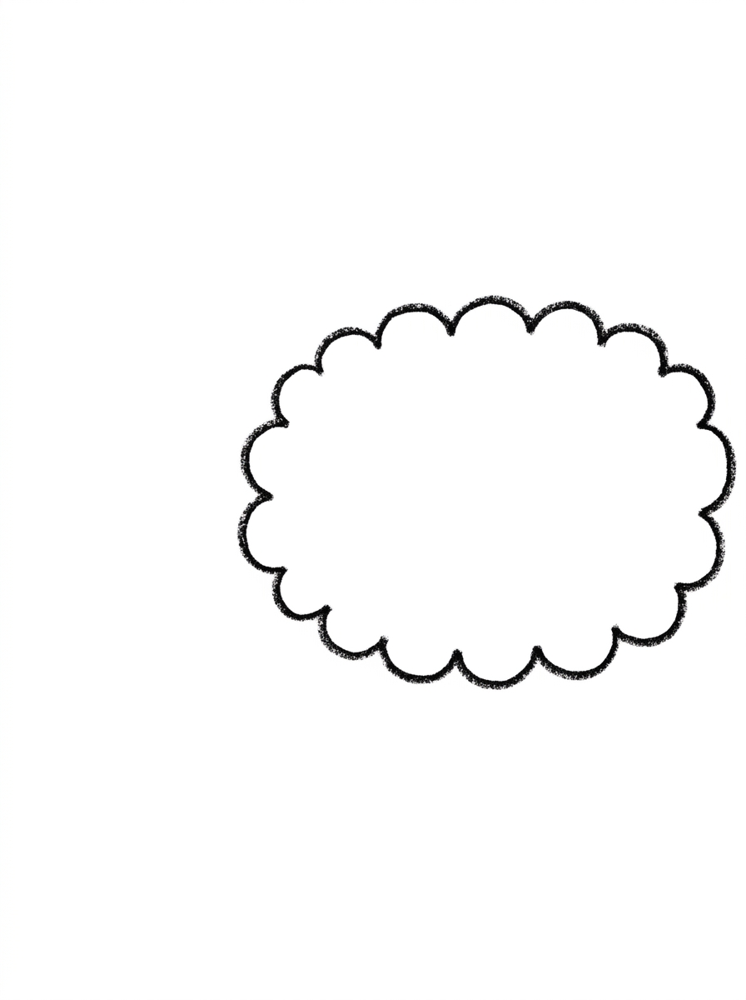
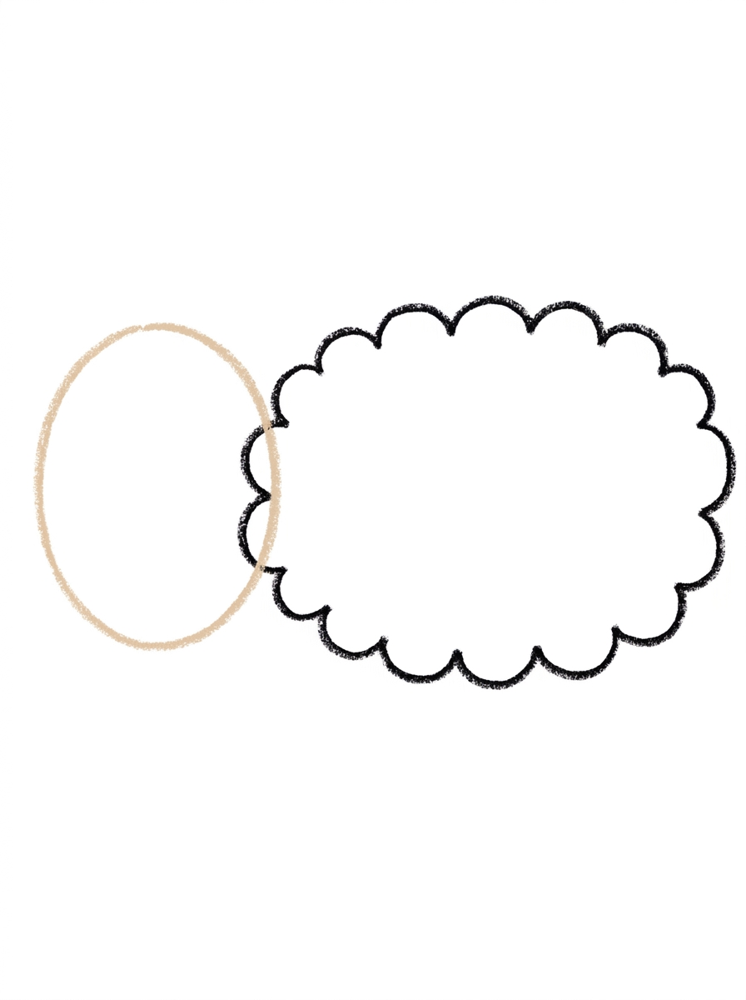
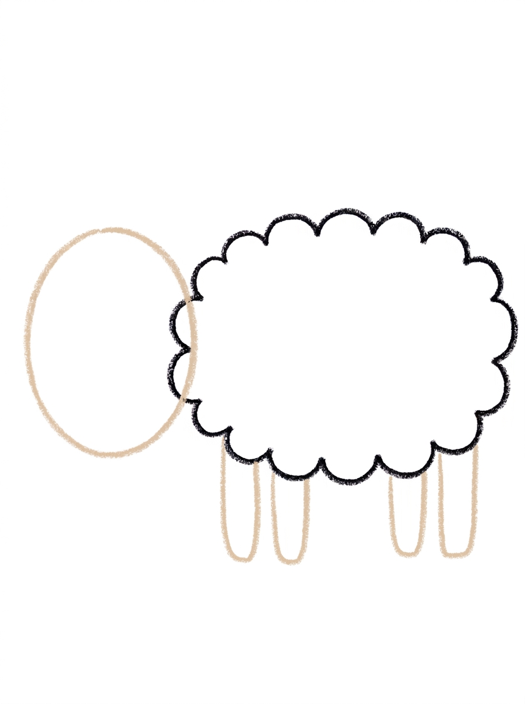
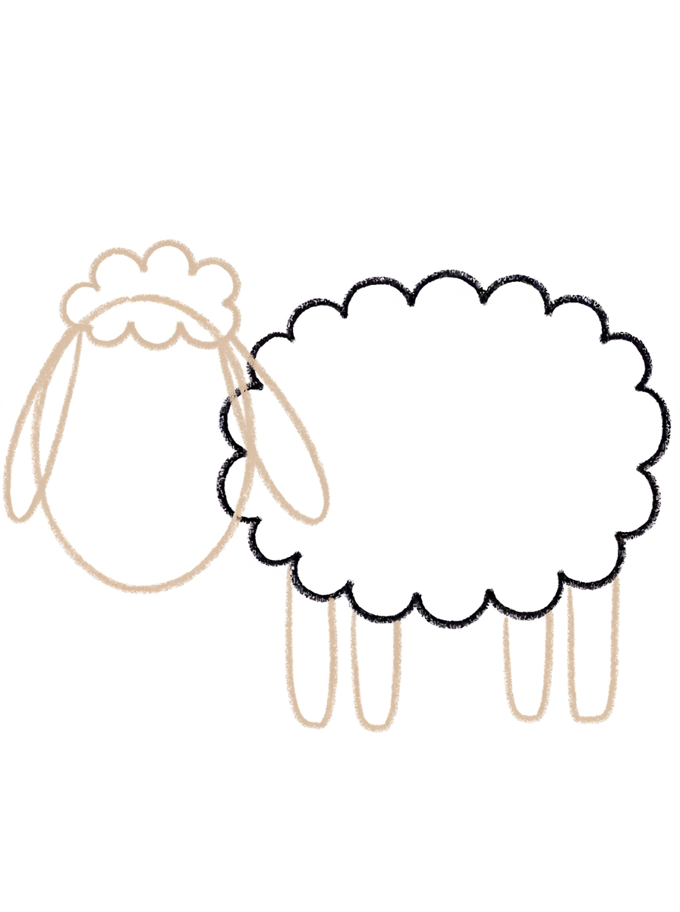
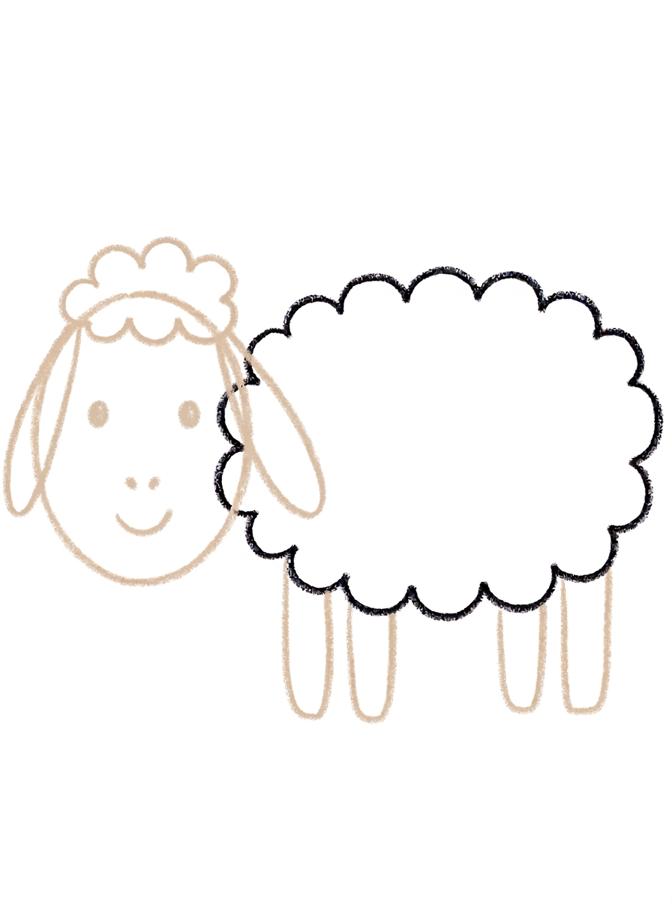
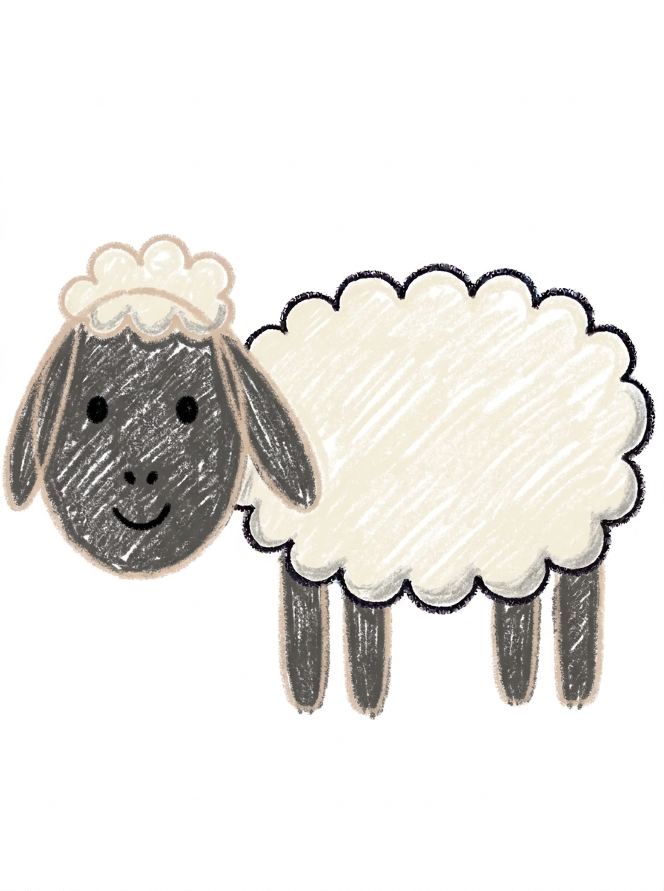

Sheep Drawing for Kids How to Draw A Sheep in 6 Easy Steps
Quick Answer
Draw a sheep in six easy steps: a bumpy cloud body, an oval head, four legs, a wool tuft with two floppy ears, a dot-eyed face, then color. The wool is soft cream white and the face dark grey. Made for ages 3 and up, free, with no signup needed.
At a Glance
- Subject: How to draw a sheep
- Ages: 3+
- Steps: 6 steps
- Time: ~15 min
- Difficulty: Easy
- Supplies: Paper, crayons
A sheep is mostly one big cloud — the woolly body is just a wide oval with bumps all the way around, and everything else hangs off it. Add an oval head, four little legs, and a friendly face, and your child has a sheep that looks straight off the farm.
✏️ Draw Your Sheep in 6 Easy Steps
One step per box — this step by step sheep drawing shows each new part in a different color so kids can see exactly what changed.
Step 1: The Woolly Body

Draw one big cloud shape — a wide oval with bumps all the way around. That is the sheep's woolly body.
Step 2: The Head

Draw one plain oval stuck to the left side of the body. That is the head.
Step 3: Four Legs

Draw four short legs under the body — two near the front and two near the back. Sheep have four legs!
Step 4: The Wool Tuft and Ears

Draw a bumpy wool tuft on top of the head, and one long floppy ear hanging down on each side of the head.
Step 5: The Face

Draw two round dot eyes, a tiny nose made of two little dots, and one small curved line under the nose for a smile.
Step 6: Color It In

Color the woolly body and the tuft soft cream white. Color the head, ears, and legs dark grey, make the eyes solid black, and the nose and smile black too.
📊 Sheep Drawing by Age
Every age can join in — just adjust the job.
| Age | What they can do | Tip |
|---|---|---|
| 3-4 | Draw the bumpy cloud body — bumps are forgiving for little hands — and color the wool soft cream white. | Leave room on the left side of the page: the head sticks onto the body's left side, so start the cloud right of center. |
| 4-5 | Add the oval head and the four legs, two near the front and two near the back. | Count the legs out loud as they draw — sheep need all four, and drawing them in pairs (front two, back two) is easier than four in a row. |
| 6+ | Finish all six steps, including the wool tuft, both floppy ears, and the two-dot nose. | Let older kids build a meadow around the sheep: grass tufts, a fence, and a second smaller lamb using the same steps. |
🖨️ Download Your Free Sheep Drawing Printable
The printable lays out all 6 steps one per box, big enough for little hands — kids draw right alongside each step.
⬇️ Open Free Printable 🖨️ Print🎁 Free printable for ages 3+
🐑 Sheep Meadow Page
Give your sheep a home: draw a meadow around it with grass tufts, a simple fence, and a sun, then decide who else lives there — a lamb, a dog, or a whole flock of cloud-shaped friends. Name your sheep and write its name under the drawing (or dictate it for a grown-up to write). Bonus challenge: draw a black sheep using the exact same steps and opposite colors.
What You'll Need to Draw A Sheep
All you need is a pencil, an eraser, and crayons or markers. For the colors in the tutorial, have soft cream white ready for the woolly body and tuft, dark grey for the head, ears, and legs, and black for the eyes, nose dots, and smile. Regular printer paper or a sketchbook both work.
What They're Learning
This tutorial practices bumpy cloud outlines (wavy fine-motor control all the way around a shape), ovals in two roles (head and ears), and counting with purpose — four legs, two ears, two nose dots. Kids also practice left-to-right planning, since the head goes on the left and the body needs room, and sequencing from the biggest shape to the smallest detail.
Make It Yours
Try a black sheep by flipping the colors — dark wool, lighter face — a rainbow sheep with a different color on every bump row, a sleeping sheep with curved closed eyes in a field of flowers, or a baby lamb drawn with the same steps, smaller body and a bigger head. A whole flock in different sizes makes a great farm picture.
🛒 Our Favorite Drawing Supplies
These are the supplies we reach for in our own home — washable (because kids), quality paper, and enough colors to avoid fights.
As an Amazon Associate, MomYouNeedThis earns from qualifying purchases — at no extra cost to you.
💡 Sheep Drawing Tips for Parents
Step 1's cloud sets up the whole page: start it right of center so the head has somewhere to go on the left. If your child's cloud comes out more potato than oval, that's fine — it still reads as wool. Legs in step 3 should hang from the bottom bumps; if a leg lands between bumps, nobody can tell once it's colored.
The face in step 5 is small and easy to rush. Slow it down: two dot eyes up high, then the two-dot nose below them, then the smile under the nose. If the ears in step 4 point up instead of flopping down, just call it an alert sheep — or redraw them hanging alongside the head, since floppy ears are a big part of what makes this one read as a sheep.
🐑 Sheep in the Real World
Real sheep are grazing animals that live in flocks, following each other across fields and hillsides. Their wool grows all year long, and once a year a shearer gives them what amounts to a very big haircut — the wool becomes sweaters, blankets, and mittens, and the sheep grows a fresh coat. A baby sheep is a lamb, and lambs can stand up within minutes of being born.
Sheep have excellent memories for faces — they can recognize other sheep, and the people who care for them, for years. Ask your child who their sheep's best friend in the flock is. There is always an answer, and it is usually a good story starter.
✋ Warm-Up: Cloud Bumps
Sheep wool is drawn as one long bumpy line, so practice bumps first. Cover a scrap page with cloud outlines — bumps going up, bumps going down, big clouds and little clouds. Then try drawing a whole cloud without lifting the crayon. Wobbly bumps are not mistakes here; wool is wobbly by definition.
That is this tutorial's built-in mercy: the messiest line on the page is supposed to look like that. If a leg lands in an odd spot, it hides behind the wool. Save your child's worry for the face, which is small, quick, and easy to redo on its own.
📖 Give Your Sheep a Story
Flocks are families, and families have stories. What is your sheep's name, and is it the leader of the flock, the littlest lamb's mother, or the one who always wanders off? A dictated caption under the drawing gives the sheep a character your child will remember next drawing session.
Every flock needs a sheepdog, and the dog tutorial is ready when yours does. Drawing the dog next gives the meadow a second resident — and gives your child a reason to draw the fence, the grass, and the rest of the farm around both of them. Fill the farmyard with how to draw a cow in the next field and how to draw a horse by the fence.
❓ Sheep Drawing FAQs
What is the easiest way to draw a sheep?
Start with one big cloud shape for the woolly body, then stick a plain oval head on the left side. Add four short legs, a bumpy wool tuft and two floppy ears, then a face with dot eyes and a two-dot nose.
What age is this sheep drawing for?
It's made for ages 3 and up. The shapes are all preschool-friendly — a bumpy cloud, ovals, and dots — and younger kids can do the body and coloring while older kids add the legs, ears, and face themselves.
What supplies do we need?
A pencil, an eraser, paper, and crayons or markers. For colors you'll want soft cream white for the wool, dark grey for the head, ears, and legs, and black for the eyes, nose, and smile.
Is the printable really free?
Yes — every printable on MomYouNeedThis is 100% free, including this sheep drawing tutorial. There is no signup, no email, and no catch — just download, print, and draw.
How do I print it?
Open the PDF and choose Print, then set the scale to 100% (sometimes called Actual Size) so the steps print at full size. The tutorial is designed for regular US Letter paper, and plain printer paper works perfectly.
Why is the sheep's body a cloud?
Because wool is the sheep's whole personality — a cloud outline reads instantly as fluffy wool, and the bumps are wonderfully forgiving: there is no wrong way to draw a bump, so every child's sheep comes out right.
How many legs does the sheep have?
Four — two near the front of the body and two near the back, hanging down from the bottom bumps of the wool. Counting them out loud while drawing is an easy way to make sure none go missing.
Can my sheep be a different color?
Of course — a black sheep is the classic: color the wool dark and the face light, the mirror image of the tutorial. Rainbow wool, pink wool, and stripy wool all work too; the cloud shape stays the same.
📚 Keep Exploring
- ✏️ All 76 Drawing Tutorials 76 free step-by-step drawing tutorials for kids.
- 🐾 Animal Coloring Free animal coloring pages for kids.
- ✏️ Drawing Practice Free printable drawing pre-writing worksheet for toddlers.